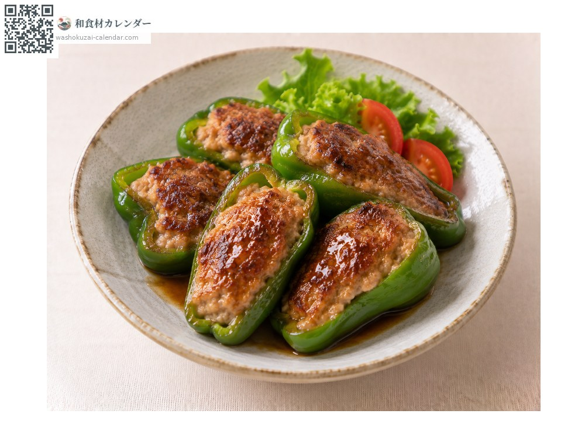
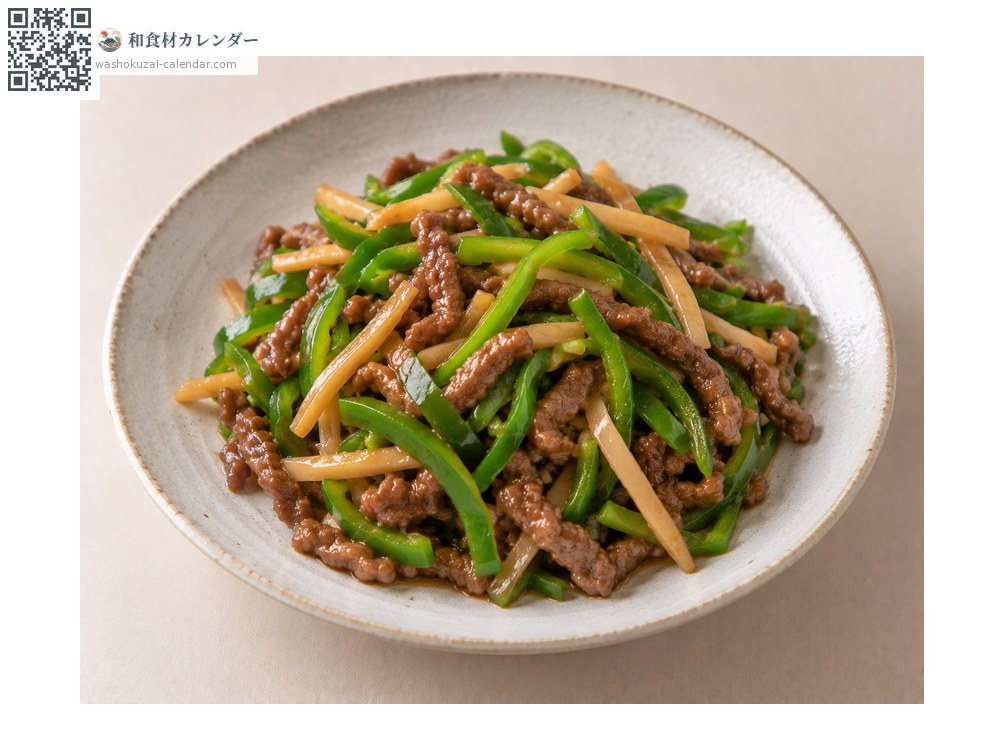
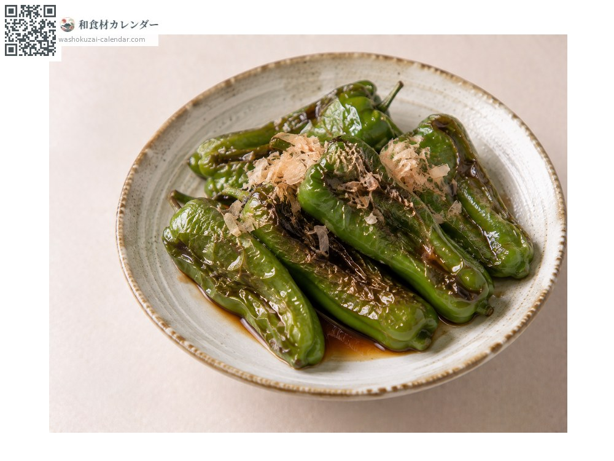
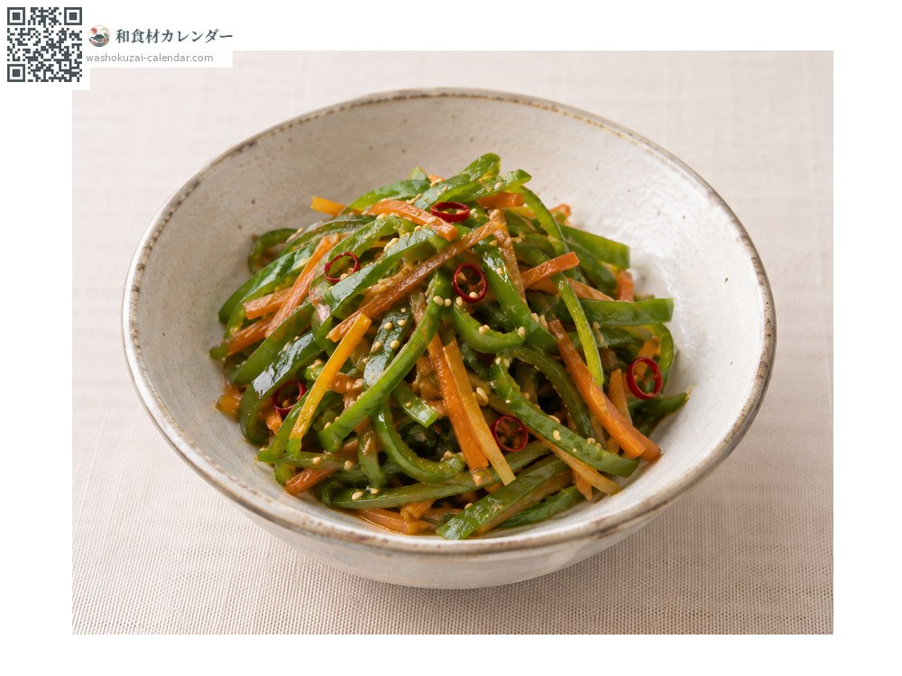

ผัก
พริกหวานเขียว
ピーマン ぴーまん
อร่อยที่สุดในเดือน มิ.ย., ก.ค., ส.ค., ก.ย.

ช่วงที่อร่อยที่สุด
ม.ค.
ก.พ.
มี.ค.
เม.ย.
พ.ค.
มิ.ย.
ก.ค.
ส.ค.
ก.ย.
ต.ค.
พ.ย.
ธ.ค.
ช่วงอร่อยที่สุดมีจำหน่าย
วิธีปรุง

ยัดไส้หมูสับ
ผ่าครึ่งแล้วยัดไส้

ผัดพริกหวานกับเนื้อเส้น
ซอยเส้นแล้วผัด

พริกหวานย่างทั้งลูก
ย่างทั้งลูกราดซีอิ๊ว

คินปิระ (ผัดซอยเส้นรสหวานเค็ม)
ผัดรสหวานเค็ม
วิธีเลือก
เปลือกเป็นมันตึง ไหล่นูนขึ้น รอยตัดที่ขั้วยังใหม่
วิธีเก็บรักษา
ซับน้ำ ใส่ถุงแล้วแช่เย็น เก็บได้ประมาณหนึ่งสัปดาห์
แหล่งผลิตหลัก
เกร็ดน่ารู้
เมื่อสุกเต็มที่จะเปลี่ยนเป็นสีแดง หวานขึ้นและขมน้อยลง เป็นคนละพันธุ์กับพริกหวานปาปริก้า
วัตถุดิบที่อร่อยที่สุดในช่วงเดียวกัน
 หน่อไม้ฝรั่ง
หน่อไม้ฝรั่ง ผักกาดหอมห่อ
ผักกาดหอมห่อ ผักกวางตุ้งฮ่องเต้
ผักกวางตุ้งฮ่องเต้ ผักปลัง
ผักปลัง เมียวกะ (ดอกขิงญี่ปุ่น)
เมียวกะ (ดอกขิงญี่ปุ่น) ใบชิโสะ
ใบชิโสะ ช่อดอกชิโสะ
ช่อดอกชิโสะ ช่อเมล็ดชิโสะ
ช่อเมล็ดชิโสะ